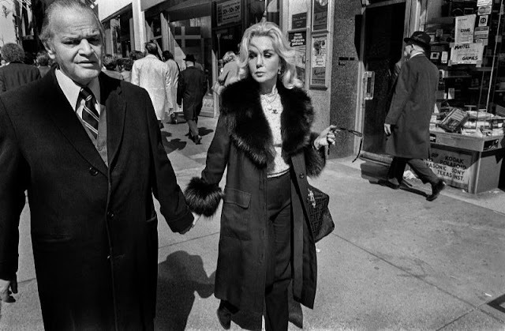

Avenue B and East 12th Street, looking north. 1985.
Avenue B and East 12th Street, looking north. 1985.

9th Avenue and 15th Street, 1980
Smoke Shop, Houston and Varick Street, 1984

Brooklyn Heights, 1979
Times were tight at the old Brooklyn nunnery in the 80s. Sister Mary had to take baths at the local carwash.
Lynch Park, Brooklyn, 1974

Up on the roof.
Current mood.

Brighton Beach 1980

Women in bathing suits on the boardwalk with percussion band behind.
Coney Island, 1984
William Gedney Photographs and Writings
Duke University David M. Rubenstein Rare Book & Manuscript Library

Simon and Garfunkel outside The English Pub on 6th Ave and 3rd St, 1966
Paul hangin’ on 79th St, 1982

All aboard the world’s shittiest train…

666

Where horror movies happen.

Garbage, 1970s

88th Street, looking west at Broadway, 1983

Carvel at Greenpoint Ave and 45th St, Sunnyside Queens, 1969

80th St and Northern Blvd, Jackson Heights, Queens, 1960s

Times Square subway entrance, 1982

84th Street and Roosevelt Ave, Jackson Heights, Queens, 1960s

90th Street, Jackson Heights, Queens, 1982

Looking up 5th Ave, at 18th Street, 1987
Shaved ice and the leaning tower of phone, Rivington Street, 1970s
Hello nycnostalgia , can you find more pictures of New York City in the years 1979-1980?
Always grateful for the pics you post!!
Is there any particular street/place you like?
Thanks! Nowhere in particular. Anywhere that reminds me of what NYC used to be like.
Hi where in NYC are you from??
I am in Jackson Heights Queens
Please Post more pictures of Queens in the 1970s and 1980s
Upper west side of Manhattan. I always keep an eye open for Queens pics. Thanks for checking in!
Mingus in NYC!

Chillin’ out, maxin’, relaxin’, all cool… Central Park, 1970s
Down near Wall Street during the Bicentennial, 1976

The dawn of the graffiti era, 1973

Teacher’s Restaurant, upper west side, 1980. Teacher’s was kind of a hip bistro, before hip bistros were hip.

7th Ave and Greenwich Ave, 1976. St. Vincent’s Hospital on the left.
The man is pissed at his audience. Brooklyn, 1970s.
Delancey Street, 1960s

Put a quarter in the USA Today box, get a baby! Brooklyn 1983.

CBGB. Which was nicer inside, the club or the dumpster?
Chock Full o’ Nuts and Zum Zum, Broadway 1971

1972 subway map
42nd Street, 1972

Park Ave and 132nd St., 1986

Someone either sleeping or dead on the roof of a parked car.
W. 4th Street, 1970



Photos by Bruce Gilden - New York - 1979
Wall Street, 1988
Queen Elizabeth flaunting her absurd privilege in 1976

Demonstrators on 34th St, circa 1970

Keith Haring signing his Anti-Nuclear posters at a rally in New York City in 1982

Family adventure in a phone booth. Broadway between 13th and 14th, near Union Square. 1980s.
Astor Place Hair Cutters, 1983. I got tetanus there a bunch of times!

Crossbay Boulevard and Liberty Avenue in Queens, 1965